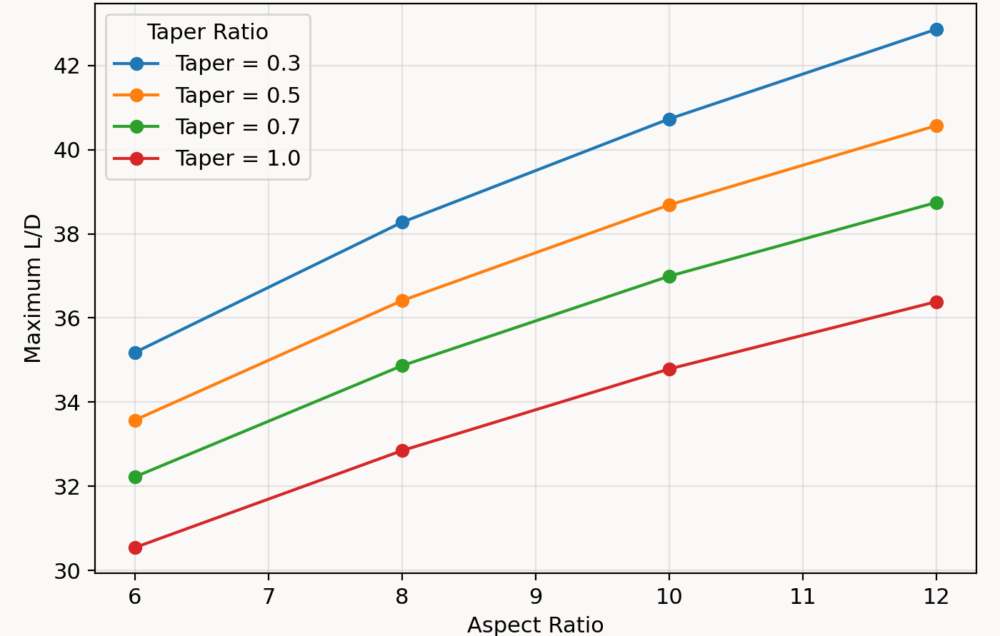
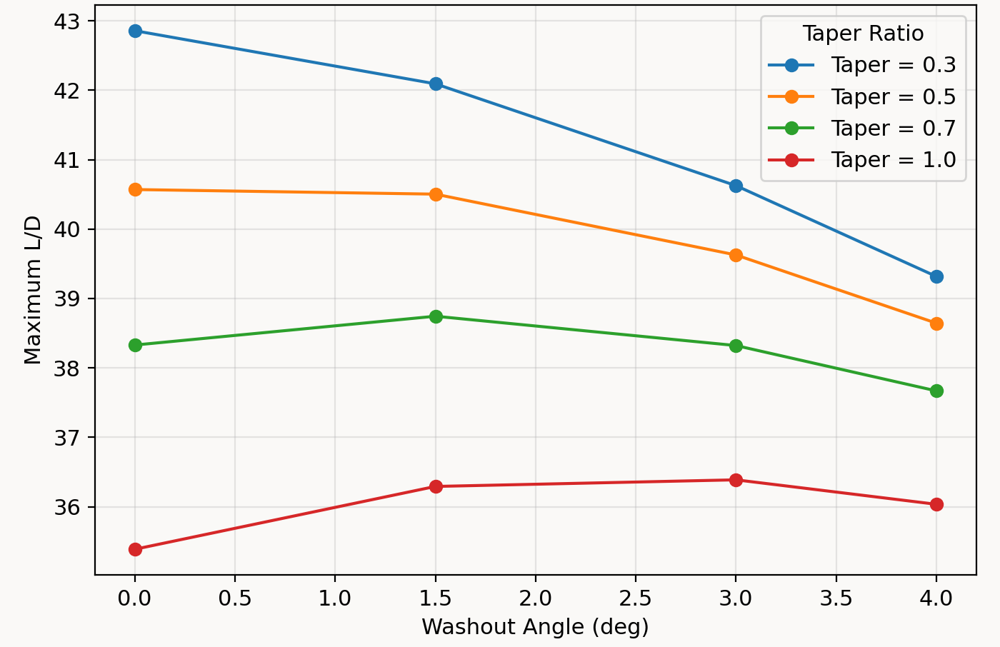
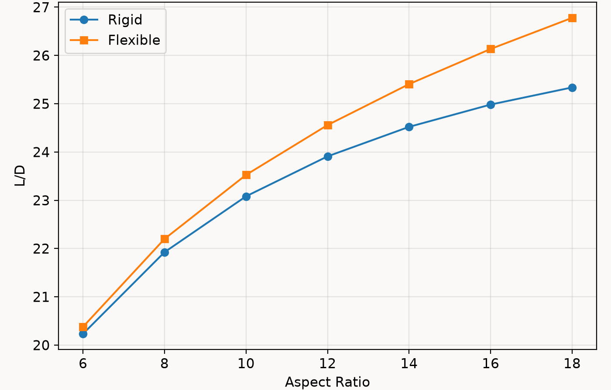
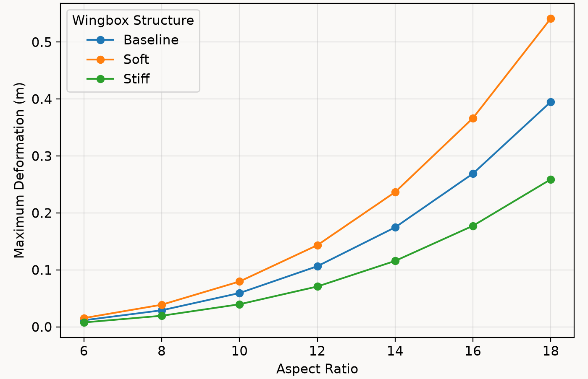
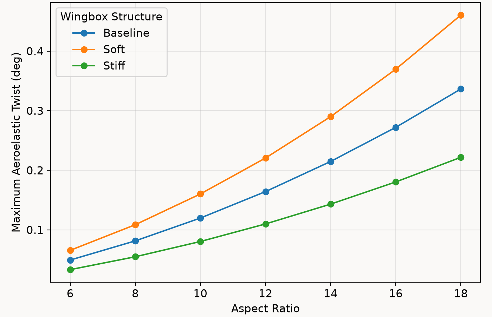

Wing Geometry Analysis
How does the aerodynamic advantage of increasing aspect ratio change when considering the structural flexibility and aeroelastic deformation properties of a wing?
This report investigates how the geometrical properties of a Cessna 172-inspired wing affect its lift and drag generation in the case of a rigid and a flexible wing. Specifically, how the aspect ratio (AR), taper ratio (TR) and twist angle (washout) geometry influences aerodynamic performance for rigid wings, then looking at how these effects change in an environment where the wing is flexible and can undergo aeroelastic deformation.
Higher aspect ratios are theoretically associated with improved aerodynamic efficiency, particularly through reduced induced drag as shown in this formula.
CDi = CL² / (π × AR × e)
As AR increases, wing span is increased rather than the chord length, producing a narrower and longer wing as well as increasing the distance between the 2 wingtips of the plane. This greater distance is crucial because a larger wingspan spreads the lift over a wider area of air. This reduces the downwash velocity and downwash angle across the wing, which reduces the induced drag effect.
However, narrower and higher AR wings are also subject to greater structural and aeroelastic deformation. These deformations are both physical changes to wing shape but differ in behavior. Both types of deformation actually settle into a static equilibrium during steady flight. The difference is that aeroelastic deformation involves a two-way feedback loop: the aerodynamic loads change the wing's shape, and that new shape changes the aerodynamic loads over and over until it settles into equilibrium. Since real wings deform under aerodynamic loading, a rigid wing analysis cannot fully capture this behavior.
This is the primary trade-off explored in the report: whether the aerodynamic advantage of increasing aspect ratio still holds once structural flexibility and aeroelastic deformation are introduced.
The initial hypothesis was that deformation and twisting of a flexible wing analysis would significantly reduce its lift-to-drag ratio (L/D) by introducing additional viscous drag, and that the aerodynamic benefits of increasing aspect ratio would eventually be overshadowed by the increasingly large structural deformations produced by longer wings.
Theoretical Concepts
This section explains the key wing geometry concepts referenced throughout the report.
| Chord | This is the width of a wing, measured from the front edge to the back edge. The chord length where the wing meets the fuselage is called the root chord, and the one at the tip of the wing is called tip chord. |
|---|---|
| Taper Ratio | Defined as the ratio of the tip chord length over the root chord length, which is why the values range from 0.1 to 1.0. |
| Aspect Ratio | Defined as the ratio of the wingspan squared and the wing area. |
| Twist Angle (Wing Washout) | Wing washout refers to the tip of a wing being designed at a lower or higher angle of incidence than at the root. |
Here is a tool you can use to visualize how changing each geometrical property affects the overall wing shape.
Geometrical values used in the initial rigid wing study:
| Aspect Ratio | 6.0, 8.0, 10.0, 12.0 |
|---|---|
| Taper Ratio | 0.3, 0.5, 0.7, 1.0 |
| Washout Angle | 0, -1.5, -3.0, -4.0 |
Methods
Rigid Wing Analysis Using LLT (Sim 1)
The initial rigid wing study was performed using XFLR5 and Lifting Line Theory (LLT). Before analyzing the complete wing, a batch foil analysis was performed on the NACA 2412 airfoil at Reynolds numbers ranging from 5.0 × 106 to 8.5 × 106 and angles of attack between -6° and 22°, at 0.5° increments. This provided the viscous aerodynamic behavior required by the LLT solver to determine the aerodynamic performance of the finite 3D wing.
The three geometrical variables were then combined to produce 64 possible wing configurations using the AR, TR and washout values listed in the Theoretical Concepts table. Each geometry was analyzed between -6° and 22° in freestream air at 235 km/h. The purpose of this initial study was to observe how aspect ratio, taper ratio and washout influenced aerodynamic performance before structural flexibility was introduced.
Rigid & Flexible Wing Analysis Using OpenAeroStruct (OAS) and VLM
The wing geometry producing the highest maximum L/D from Sim 1 was then used as a starting point for the aerostructural study. The wing used had properties AR = 12, taper ratio = 0.3 and washout = -1.5°, which was also part of the group with the highest aspect ratio tested in the original study.
OAS was then used to investigate this geometry over a larger aspect ratio range from 6 to 18, with reference area held constant at S = 16.18 m² meaning the chord length was decreased as the AR was increased.
Since Sim 1 was done with an LLT solver, another rigid analysis was done using OAS and a VLM solver to improve the validity of the rigid and flexible wing comparison. However, the Sim 1 results were still initially used to choose the appropriate wing geometry because they provide around the same maximum and minimum value results as the rigid VLM analysis.
As the name implies, the wings in the rigid analysis underwent no geometry changes under any aerodynamic loading whereas in the flexible analysis, only a specific section of the wing, determined within OAS using a numerical wingbox structure, was allowed to deform under aerodynamic loading.
Since several of these structural properties were assumed rather than taken directly from the Cessna 172 wing structure, a sensitivity analysis was performed after the baseline simulations to investigate whether the observed aerodynamic trends depended strongly on the particular wingbox definition chosen.
Results and Discussion
Rigid Wing Analysis Using XFLR5 and LLT
The initial XFLR5 analysis showed a clear relationship between aspect ratio and maximum L/D. When ranking the geometries from highest to lowest maximum L/D, the highest AR wings consistently offered the best force ratio.

This behavior is consistent with the relationship between aspect ratio and induced drag:
CDi = CL² / (π × AR × e)
The influence of washout also changed with taper ratio. Between taper ratios of 0.3 and 0.7, -4° of washout consistently produced the lowest maximum L/D. However, at a taper ratio of 1.0 this trend flipped and the wings with 0° of washout produced the lowest L/D.

This indicates that taper ratio and washout cannot be treated as fully independent influences on aerodynamic performance. The interaction between the two as well as the effects of span efficiency (e) and changes to CL was not investigated further in this report.
Rigid Wing Analysis Using OAS and VLM
The rigid OAS analysis produced the same general relationship between AR and aerodynamic efficiency. As AR increased from 6 to 18, L/D increased from 20.23 to 25.33. Although, the improvements did become progressively smaller at higher aspect ratios, which is consistent with diminishing aerodynamic returns from AR alone.
Flexible Wing Analysis Using OAS and VLM
The flexible analysis also showed increasing L/D as AR increased, going from 20.378 at AR=6 to 26.779 at AR=18. The maximum wing deformation increased from 0.0116 m at AR=6 to 0.3951 m at AR=18, while aeroelastic twist increased from 0.04° to 0.33° over the same range. Despite this rapid growth in structural deformation, L/D continued to improve throughout the tested range.
Rigid vs Flexible Wing Analysis
Both the rigid and flexible wings show increasing L/D as aspect ratio increases. However, the flexible wing consistently produces the higher value, with the difference growing from approximately 0.7% at AR=6 to 5.7% at AR=18. The flexible wings also consistently produce a higher induced drag coefficient than their rigid equivalents. This is significant since the higher L/D of the flexible wing cannot be attributed to a reduction in induced drag. Instead, deformation modifies the aerodynamic behavior of the wing to create an increase in lift that is big enough to produce a net improvement in L/D, despite the increase in induced drag. This happens because the aerodynamic center is ahead of the wing's elastic axis. This creates a pitching moment that twists the wing nose-up (leading edge), which increases the effective angle of attack along the span and gives more lift.

The viscous drag coefficient remained nearly identical between the rigid and flexible analyses across the tested AR range. However, this doesn't actually disprove the initial prediction that structural deformation would substantially increase viscous drag. Since the OAS VLM solver just uses 2D approximations to calculate viscous drag, it doesn't capture the real 3D boundary layer changes that happen when the wing twists and bends.
Sensitivity Analysis
Three wingbox configurations were considered, varying only skin and spar thickness.
| Structure | Skin Thickness (mm) | Spar Thickness (mm) |
|---|---|---|
| Soft | 1.5 | 3 |
| Baseline | 2 | 4 |
| Stiff | 3 | 6 |
All three structures produced similar trends in CL, CD, CDi, CDv and L/D. The largest differences appeared in maximum deformation and aeroelastic twist.


This confirms that the structural response is considerably more sensitive to wingbox stiffness than the resulting aerodynamic performance is. Increasing skin and spar thickness reduces bending and twisting, while decreasing these thicknesses allows substantially larger deformation. However, these large structural differences produce comparatively smaller changes in the aerodynamic coefficients.
The sensitivity analysis therefore strengthens the main result of the flexible wing study. Although the magnitude of deformation depends strongly on the assumed structure, the overall aerodynamic trend remains present for the soft, baseline and stiff configurations, confirming this finding is not solely the result of an arbitrary thickness selection.
Future Work
The rapid growth in deformation above AR=12 provides a useful direction for further investigation. One possible next step would be to select a representative wing above AR=12 and perform an individual CFD analysis on it to examine where exactly the wing deforms most strongly to see exactly how and where the angle of attack is increasing to produce that extra lift. A full 3D CFD analysis (Navier-Stokes) would also be needed to see how the aeroelastic deformation actually affects the boundary layers and viscous drag in real life, since the VLM solver couldn't physically test that part of the hypothesis.
Tools Used
- OpenAeroStruct: OpenAeroStruct is a tool used for aerostructural optimization, fundamentally based on NASA's open source multidisciplinary design and analysis optimization framework.
- XFLR5: XFLR5 is an analysis tool for airfoils, wings and planes operating at low Reynolds numbers.
- Lifting Line Theory (LLT) & Vortex Lattice Method: A personal explanation of these methods will be added soon!
In the meantime you can read more about them at this webpage. Under the Theoretical Background of the home page, sections: Part II: The inviscid problem_rev1.1 & Limitations and Shortcomings.